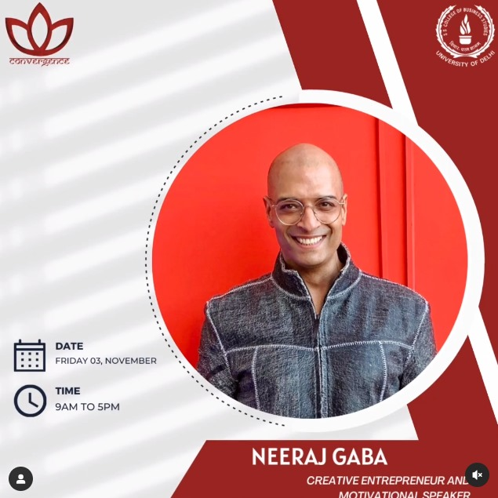

What We Do
Key Achievements in 2023-24
"We successfully organised the 16th edition of the college's Annual Leadership Summit Convergence'19.The event witnessed a footfall of over 600 in all the 3 sessions of speakers, which included the likes of Dr.Vijender Chauhan,Riya Upreti,Manjula Pradeep,Pallabi Ghosh,Yash Mor,Rida Tharana,Abhilassh Thapliyal, Mansi Modi,Manjit Thakur,Neeraj Gaba and a special appearance of Akshay Srivastava."
Key Events in 2023-24
“Convergence’23: Transcending Limits:Bridging to infinity, a culmination of thoughts, words and actions, the three principle governing factors behind a successful life. This event we talked about how the synchronization of thoughts, words and deeds leads to the actualization of goals by the prima donnas of our world. When our thoughts and words are matched with corresponding effort and enthusiasm, it leads to greatness, transcendence and abundance.”
Upcoming Events
"This year we will be gearing up to organise the seventeenth edition of the Annual Leadership Summit of SSCBS,Convergence'24.[The theme will be revealed shortly]"
Contact Us
Some of Our Speakers of Convergence'23
.png)
Dr. Vijender Chauhan
Dr. Vijender Chauhan is an exemplary Indian educator, distinguished researcher, and social media personality. He is renowned for his pivotal role as a mock interview panel member at Drishti IAS coaching center, where he assists UPSC aspirants in honing their interview skills. With a profound background in academia and an innate passion for motivating others, he's left an indelible mark on the field of education and beyond. His professional journey spans from his tenure as a lecturer at government colleges in Delhi to serving as an assistant professor at Zakir Hussain College, illustrating a truly inspiring path. His contributions extend beyond academia as he's a prolific writer with notable literary works like 'Kyuki Bharat Bhi Ek Fractal Hai' and 'Media V Stri: Ek Uttar Vimarsh.' His remarkable insights and unwavering commitment to education have merited him the prestigious Bhartendu Harishchandra Award. Moreover, he is a sought-after public speaker, sharing his wisdom at prestigious events like TEDx and Josh Talk.
Manjit Thakur
Manjit Thakur is a seasoned senior correspondent with a remarkable career spanning over 18 years. His profound understanding of media and communication is reflected in his diverse skill set, including broadcasting, storytelling, news writing, translations, and editing. His contributions extend to book editing, scriptwriting, film creation, and crafting narratives for web series, highlighting a truly versatile skill set. Currently serving as a Special Correspondent at India Today, a widely respected and prominent entity in the field of newspapers and news services industry, he has demonstrated an unwavering commitment to delivering insightful and impactful journalism. This dedication has not gone unnoticed, as his career has seen contributions to esteemed organizations like The Economic Times and Nestlé Deutschland, further cementing his reputation as a reliable and accomplished journalist. His insights, honed by years of experience, have not only informed but also inspired countless individuals.

Neeraj Gaba
A dynamic force in creative entrepreneurship, Mr. Neeraj Gaba, popularly addressed as Mr. Gaba of India’s Next Top Model on MTV India and Shaadi Fit on MX Player, seamlessly embodies the roles of a youth mentor through his offline and online motivational speaking sessions, and an exceptional anchor of fashion and lifestyle events. His influence extends to empowering aspiring young leaders in corporate, fashion & entertainment industries through thought-provoking conferences, engaging forums and various media channels. Mr. Gaba has also served as a distinguished judge at Femina Miss India 2022, directed shows at the prestigious Lakme Fashion Week since 2019, as well as the Jharkhand Adivasi Mahotsav in 2022 and 2023. His legacy radiates with brilliance, underpinned by an impressive array of accomplishments, like the enlightening webseries, "Modelling & its world with Mr. Gaba." on YouTube, through which he has embarked on a mission to demystify the intricate world of modeling, making its beauty and nuances accessible to a broader audience. His commitment to simplifying the world of modeling is a testament to his true passion for nurturing talent and fostering a more inclusive industry.